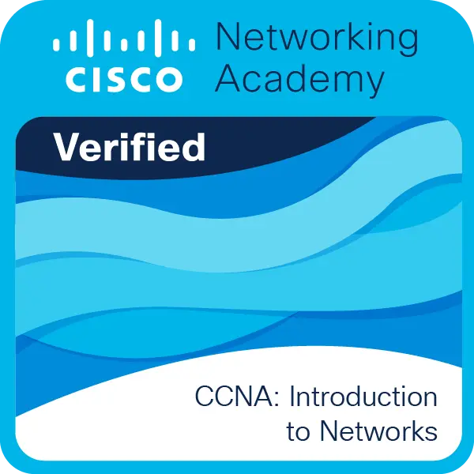
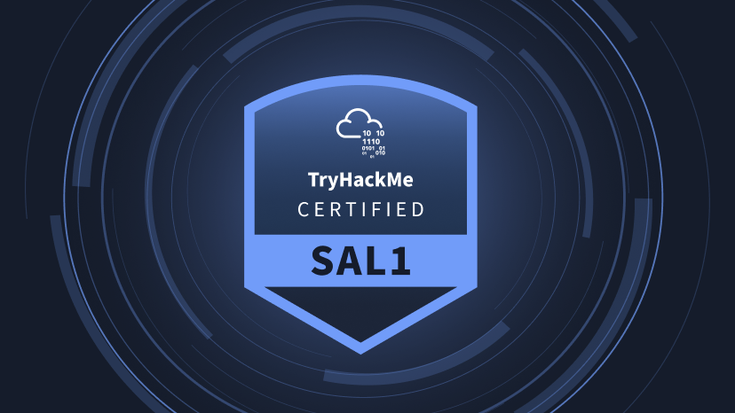
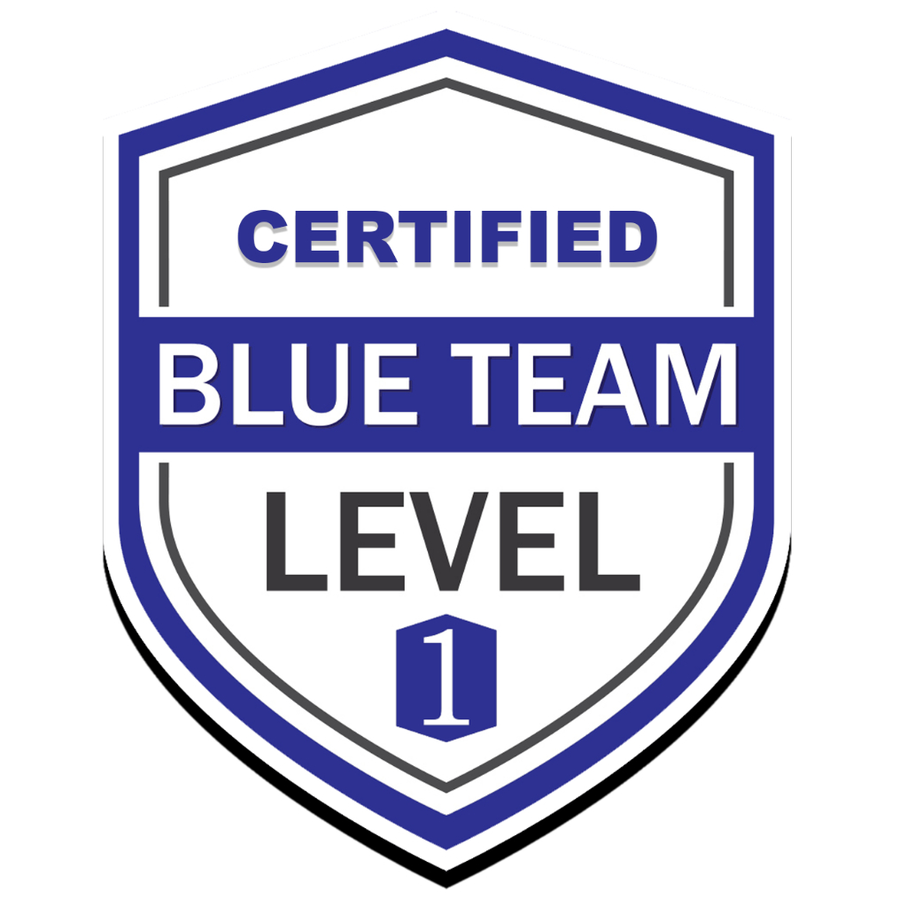

Base técnica
Formación en Telecomunicaciones, Sistemas Informáticos y Ciberseguridad, con experiencia práctica en fundamentos de redes, resolución de incidencias, documentación, detección de anomalías e informes técnicos de incidentes.
Portfolio de Ciberseguridad · Albacete, España
Analista de Ciberseguridad Junior
Analista de ciberseguridad junior con un fuerte interés práctico en operaciones IAM, automatización de seguridad, monitorización tipo SOC, seguridad del correo electrónico e informes basados en evidencias, demostrado con proyectos prácticos y validación real.
Sobre mí
Soy un profesional junior de ciberseguridad, de Albacete, enfocado en la seguridad defensiva, con un fuerte interés práctico en operaciones IAM, monitorización tipo SOC y seguridad del correo electrónico. Mi formación combina el Técnico Superior en Sistemas de Telecomunicaciones e Informáticos con un Máster Profesional en Ciberseguridad, lo que me da una base práctica en redes, sistemas Linux, resolución de incidencias, mantenimiento de infraestructuras y configuración segura de servicios.
Construyo laboratorios prácticos de ciberseguridad que combinan identidad, gestión de accesos, automatización, monitorización e informes basados en evidencias. Entre mis trabajos recientes están un IAM Operations & CyberIAM Monitoring Lab — Keycloak, OpenID Connect, RBAC, automatización en Python sobre la Admin REST API y un dashboard en Streamlit — y PhisDefense, un proyecto de seguridad del correo y dashboard SOC montado en un VPS real con Postfix, Dovecot, SPF, DKIM, DMARC p=reject, DNSSEC, MTA-STS y TLS-RPT.
Antes de especializarme en ciberseguridad, gané experiencia técnica en entornos que exigían detección de anomalías, diagnóstico de fallos, informes estructurados, documentación técnica y atención al detalle. Son habilidades que se trasladan directamente a las operaciones IAM, la monitorización SOC, el triaje de alertas, el análisis de incidentes y la investigación basada en evidencias.
Idiomas: español (nativo) · inglés (B2) · francés (A1)
Formación en Telecomunicaciones, Sistemas Informáticos y Ciberseguridad, con experiencia práctica en fundamentos de redes, resolución de incidencias, documentación, detección de anomalías e informes técnicos de incidentes.
Seguridad defensiva en operaciones IAM, monitorización tipo SOC, seguridad del correo, análisis de logs y eventos, manejo de evidencias y validación mediante proyectos prácticos.
Busco oportunidades junior en operaciones IAM, operaciones IT, análisis SOC, monitorización de seguridad y gestión de servicios: puestos donde la automatización, los informes basados en evidencias y la resolución estructurada de problemas aporten valor.
Habilidades
Una visión práctica de las áreas técnicas que estoy desarrollando en ciberseguridad: gestión de identidades y accesos, seguridad del correo, operaciones de seguridad, sistemas, scripting, automatización e informes.
Operaciones IAM practicadas en el laboratorio de Keycloak: integración SSO, RBAC, visibilidad de accesos privilegiados y monitorización de identidades.
Monitorización tipo SOC, análisis de eventos e investigación basada en evidencias aplicados en los laboratorios de seguridad del correo e IAM.
Controles defensivos de seguridad del correo, autenticación de dominio, validación frente a suplantación e infraestructura de correo segura.
Base técnica en Linux, Windows, fundamentos de redes, resolución de incidencias y conceptos de infraestructura segura.
Scripting, automatización con REST API, procesado de datos y dashboards operativos para monitorización de seguridad e informes técnicos.
Enfoque práctico basado en validación, documentación, conciencia del riesgo, recogida de evidencias y publicación saneada.
Una foto sincera de áreas defensivas y ofensivas: mi foco es el trabajo Blue Team y SOC, no las herramientas ofensivas.
Nivel extra
Una tormenta de correos golpea el servidor, oleada tras oleada. Elimina el phishing antes de que llegue, deja pasar el correo legítimo y cuidado con la botnet.
Proyectos
Trabajo práctico de ciberseguridad centrado en seguridad defensiva, análisis SOC, operaciones IAM, manejo de evidencias e infraestructura segura.
Caso de estudio destacado
Proyecto de seguridad del correo y monitorización SOC construido sobre un entorno de correo real. Valida SPF, DKIM, una política DMARC progresiva que termina en p=reject, DNSSEC, MTA-STS, TLS-RPT, controles de seguridad SMTP y manejo de evidencias tipo SOC mediante un dashboard público.
Simulación en vivo: el correo suplantado se rechaza en la puerta DMARC (p=reject) y el correo autenticado llega a la bandeja de entrada.
Construir un laboratorio defensivo de seguridad del correo donde los controles no solo se configuran, sino que se prueban, documentan y validan con evidencias técnicas.
El proyecto se desplegó en un VPS Ubuntu real con una plataforma completa de seguridad del correo.
El proyecto validó la autenticación del correo, los controles basados en DNS y la seguridad del transporte. DMARC se aplicó de forma progresiva hasta llegar a la política final p=reject. La rotación de DKIM se hizo aparte con el selector s2026.
Los eventos del servidor y las pruebas controladas se procesaron en un dataset SOC saneado y se visualizaron en un dashboard interactivo hecho con Python/Dash.
La versión pública se preparó para el portfolio protegiendo los datos operativos sensibles del entorno original.
Este proyecto demuestra habilidades Blue Team prácticas con un flujo defensivo completo: configuración, validación, recogida de evidencias, automatización, dashboards y comunicación técnica.
Caso de estudio IAM
Un laboratorio de operaciones IAM de extremo a extremo, montado como un pequeño centro de control de identidades: un proveedor de identidad Keycloak real, una aplicación Flask protegida con OpenID Connect, automatización en Python para el inventario de identidades y la revisión de cuentas privilegiadas, y un dashboard CyberIAM en Streamlit que convierte los logins, los logins fallidos y los eventos de administración en evidencias revisables y auditables.
Flujo de identidad y acceso: el login se redirige a Keycloak, el token emitido pasa la puerta RBAC hasta el perfil protegido y los eventos de login, privilegiados y de logins fallidos llegan al dashboard de monitorización IAM.
Construir un laboratorio local que simula el día a día de un equipo de operaciones IAM: visibilidad del ciclo de vida de las identidades, validación del control de accesos e informes basados en evidencias.
El laboratorio se ejecuta en local con Docker Compose y usa una plataforma IAM completa sobre Keycloak.
Scripts en Python usan la Admin REST API de Keycloak para automatizar tareas operativas de IAM y extraer eventos de autenticación y de administración.
Un dashboard de operaciones IAM/CyberIAM en Streamlit reúne las evidencias generadas en vistas operativas para su revisión e informe.
El laboratorio se construyó priorizando la seguridad en el manejo de secretos y tokens.
Este laboratorio demuestra habilidades prácticas de operaciones IAM directamente relacionadas con IAM IT Operations, la monitorización CyberIAM y los flujos de gestión de servicios.
Formación
Formación en ciberseguridad, conocimientos de sistemas, fundamentos de redes y experiencia técnica previa aplicada a la resolución de incidencias, el análisis y la documentación.
DigitechFP · Curso de especialización oficial de FP (Máster de FP)
Formación especializada en análisis de amenazas, monitorización de seguridad, fundamentos de respuesta a incidentes, infraestructura segura y proyectos de ciberseguridad defensiva.
IES Universidad Laboral
Formación técnica en telecomunicaciones, sistemas informáticos, redes, conectividad, mantenimiento de infraestructuras y resolución de averías.
Puestos técnicos con habilidades transferibles a SOC y operaciones IAM
Detección de anomalías, diagnóstico de fallos, informes estructurados de incidencias y documentación técnica en entornos de alta precisión.
Ruta de redes, SOC y Blue Team
Desarrollo continuo con fundamentos de redes, formación de analista SOC, rutas de aprendizaje Blue Team y laboratorios prácticos de ciberseguridad.
Certificaciones
Resumen visual de las certificaciones completadas, en curso y previstas sobre redes, análisis SOC, operaciones Blue Team y ciberseguridad defensiva.

Certificación de Cisco Networking Academy sobre fundamentos de redes, TCP/IP, enrutamiento, conmutación, direccionamiento y resolución básica de problemas de red.

Ruta de aprendizaje de TryHackMe sobre fundamentos de SOC, triaje de alertas, análisis de logs, monitorización de seguridad y flujos de trabajo Blue Team.

Certificación prevista centrada en habilidades Blue Team prácticas, análisis defensivo, gestión de incidentes, operaciones de seguridad y metodología de investigación.
Contacto
Vivo en Albacete (España). Disponible para puestos junior de operaciones IAM, SOC, operaciones IT y ciberseguridad en España o en remoto.
Disponible para nuevas oportunidades — suelo responder en menos de 24 h